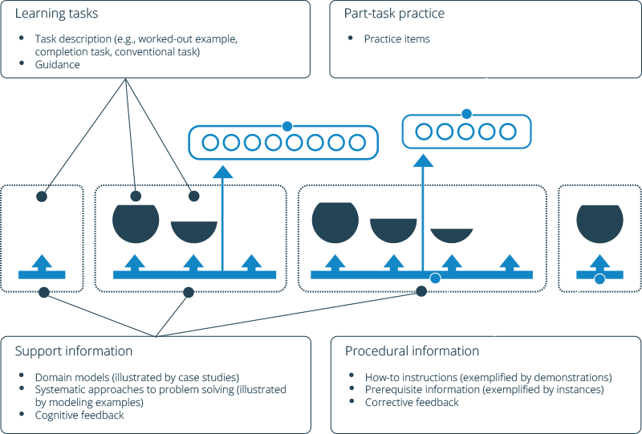

Docker Datacenter Training 3 - UCP User Management and Troubleshooting
Intro to Instructor
Insert Pic Here
A Note on Pedagogy
- Docker believes in learning by doing, with support.
- Passing the course: 70+ on final assessment.

Session logistics
- 4 hours duration
- 80% lab exercises, 20% lecture
- Short break every hour
- GoToTraining audio options
- Phone conference - number is displayed on GTT application
- Mic and Speakers - Please use headset
- Ask questions at anytime
- Unmute yourself and ask
- Post in chat window
Assumed knowledge
- You should have completed
- Deploying Docker Datacenter for Evaluation and Production
- Managing Container Services with UCP
- You should know how to
- Install UCP on a production environment
- Run a container in UCP
- Install the client bundle
- Launch applications using the client bundle
- Use Docker Toolbox on their local PC or Mac
Your lab environment
- You have been given three AWS instances with UCP pre-installed
- ucp-controller
- ucp-node0
- ucp-node1
- You also have 1 AWS node with an LDAP server pre-installed
- Credentials and access key have been emailed
Agenda
- Introduction
- Pre-assessment
- Docker Primer + Access Course Content
- Task: Create Users and Teams
- Mini Lecture: User Management
- Task: Test User Access
- Mini Lecture: UCP Access Control
- Task: Advanced User Management
- Task: User Management with LDAP
- Task: Troubleshooting Lab - Password recovery
- Task: Troubleshooting lab - User Access
- Mini Lecture - Monitoring and Recovery of UCP and applications
- Task: Node Recovery
- Post Assessment
- Questions and Discussion with Instructor
Pre-assessment
Go to https://trueability.com/docker
- Click on Redeem Invite
- Sign up for an account or login to your existing account
- Use your assessment code to redeem an assessment
Note: Instructor will provide assessment code
Get your course content
- Slides are powered by Reveal.js
- Run inside Docker container
docker run -ti --rm -v /var/run/docker.sock:/var/run/docker.sock training/docker-present -p 8080